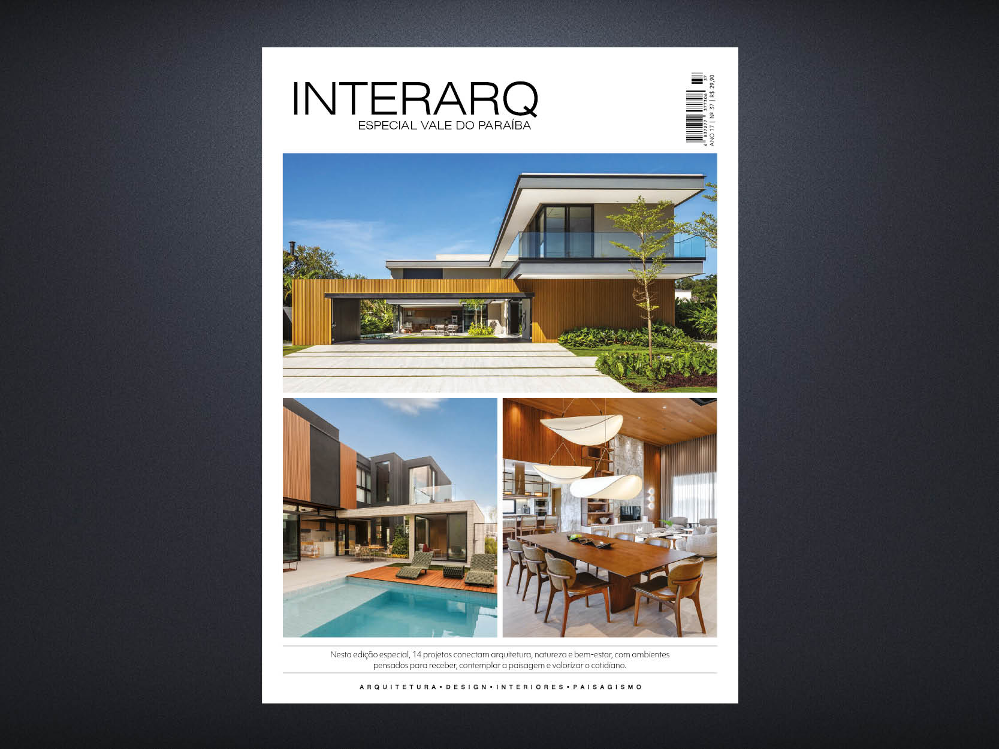
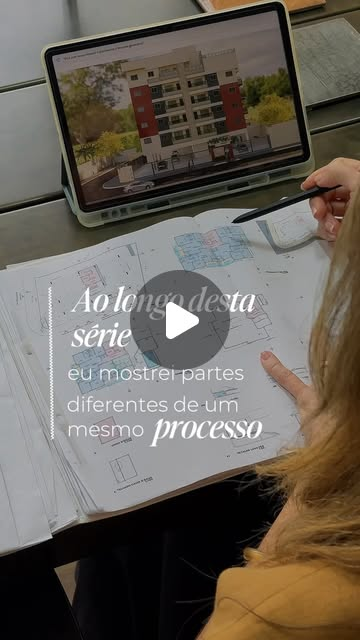

Instagram · Reel
O que orienta cada projeto
Técnica, funcionalidade, conforto, durabilidade e sustentabilidade guiam as decisões do escritório em projetos residenciais, comerciais e edifícios.
Assistir no InstagramMídias
Conteúdos da Carol Magno Arquitetura sobre ideias, decisões e soluções para diferentes espaços.

Publicação em revista
A edição reúne 14 projetos que aproximam arquitetura, natureza e bem-estar, com soluções pensadas para valorizar a paisagem e o cotidiano.
Ver edição completaSeleção de conteúdos
Técnica, funcionalidade, conforto, durabilidade e sustentabilidade guiam as decisões do escritório em projetos residenciais, comerciais e edifícios.
Assistir no Instagram
Uma visão dos bastidores e das decisões coordenadas que levam o projeto do conceito às etapas de desenvolvimento.
Assistir no Instagram
Estratégias para edificações mais sustentáveis e como conhecê-las pode ajudar no planejamento e na aprovação de projetos.
Assistir no Instagram
Seis meses de transformação, com novo layout para a cozinha, fluxos reorganizados e materiais integrados à área social.
Assistir no Instagram